- 年份
- 2024
- 品类
- 酸菜鱼餐饮
- 做了什么
01 / 挑战
换掉一块认不出的字标
改造前，稻成用的是一块深绿方块里的字标。这次要给它换一张一眼能认出的脸。
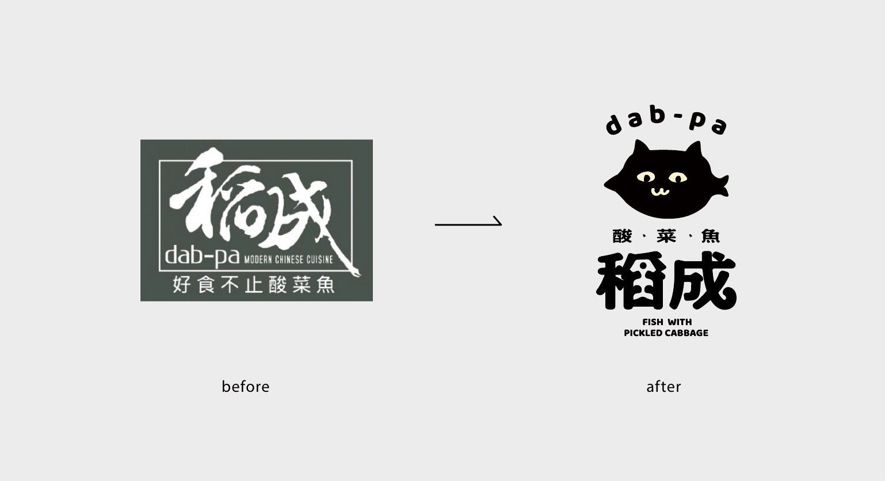
02 / 思路
先讲一个故事，再找符号
手册从一个故事讲起：阿成厌倦了城市，去稻城亚丁旅行，在路上爱上酸菜鱼，回来开了店，还在店门口收养了一只黑色的流浪猫，取名小白。小白就成了品牌的超级符号。
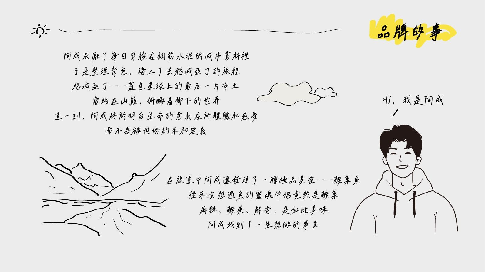
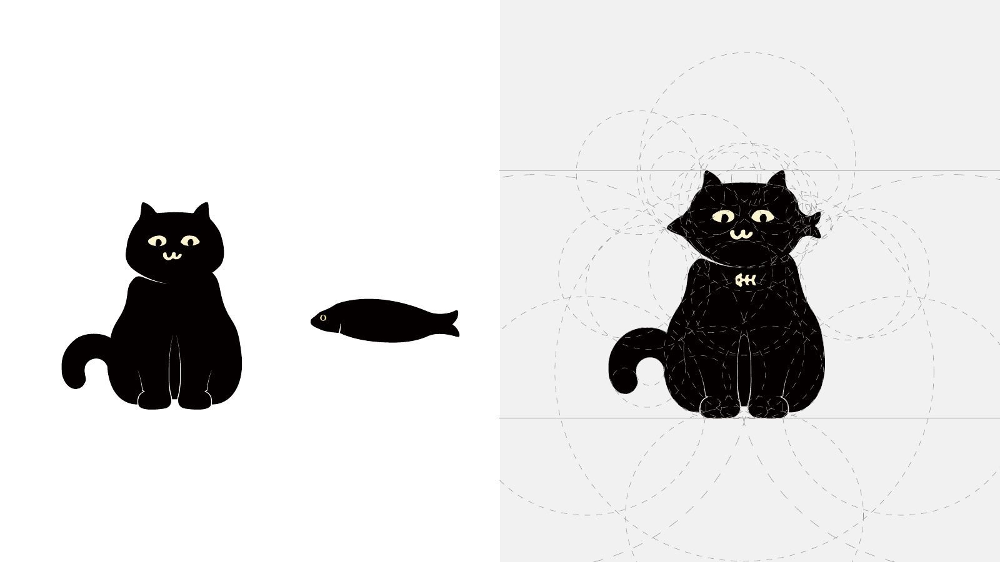
03 / 系统
宋体变体、明黄，和一只有脾气的猫
字型以宋体为底做变体，曲线更多，融入鱼骨头和鱼尾巴，结构更轻、更有趣味。主色是明黄、灰和黑，门店色板直接取自一面黄墙。小白有自己的档案：体重 8kg，日常是吃酸菜鱼、睡觉、放空、跑酷、钻袋子，还配了一组口头禅，比如「努力变圆，不能被看扁」。
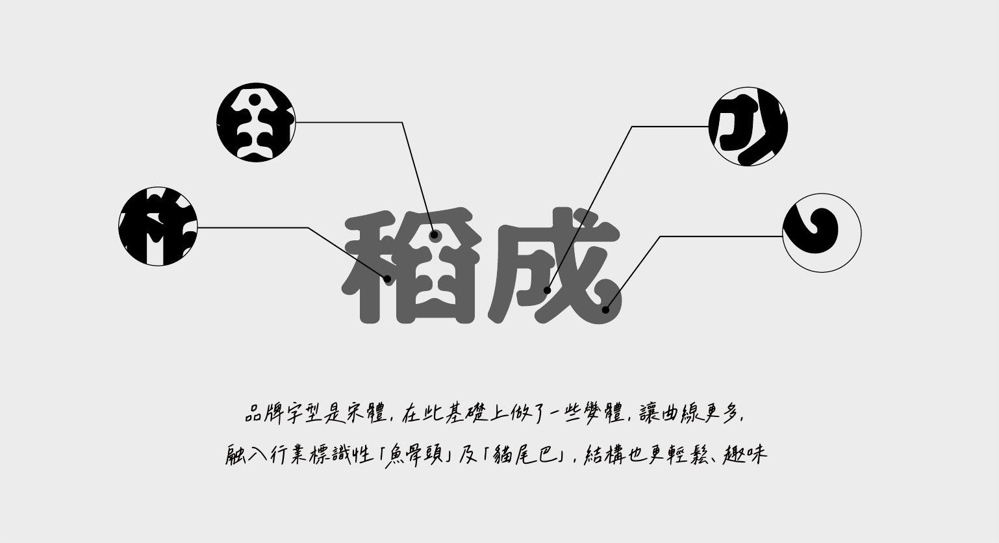
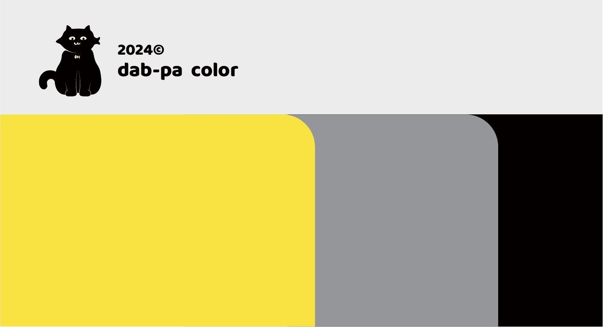
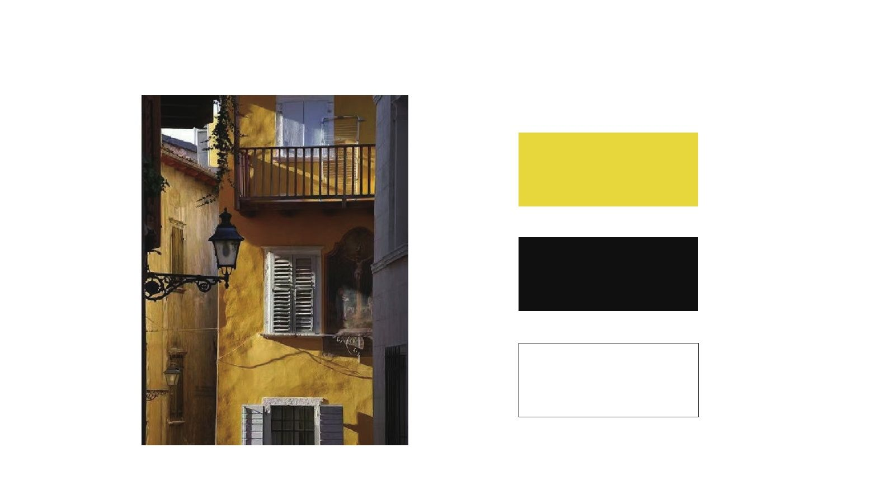
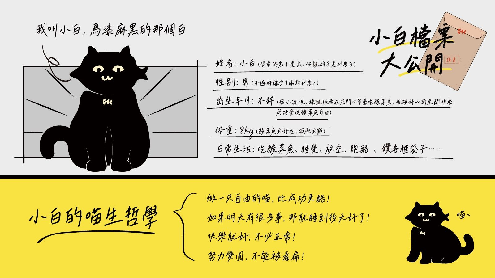

04 / 落地
从筷子套到门店
手册把系统落到每一件店里用得到的东西上：纸袋、塑料袋、筷子与湿巾包装、号码牌、集章卡、会员卡、打包盒、异形菜单和台卡；工作服有 T 恤、卫衣、围裙、工作帽和牛仔背带款；周边有帆布袋、手机壳、猫头包、餐盘器皿和 IP 模型；最后是门店的室内外效果图。
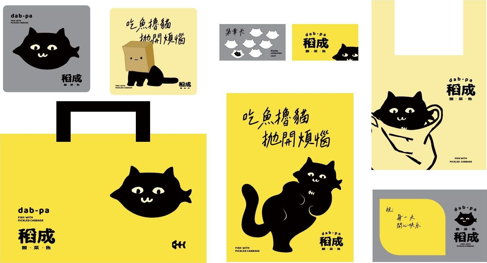
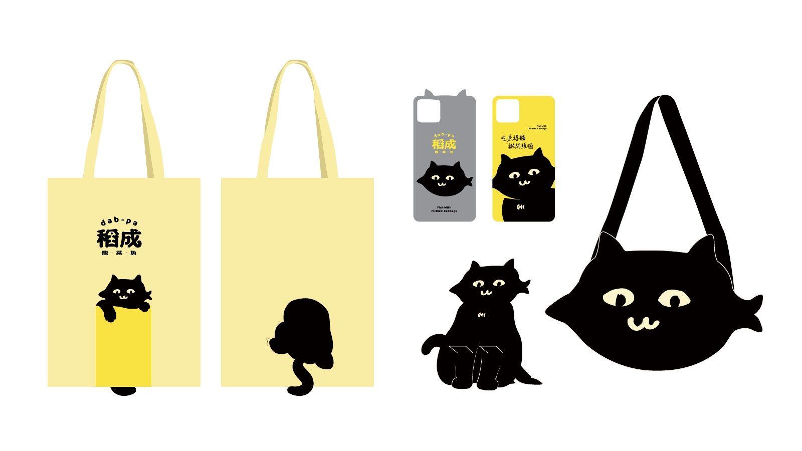
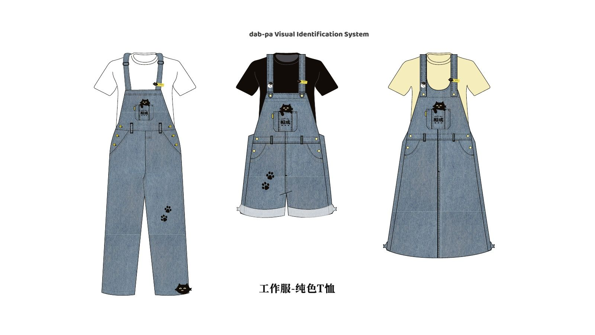
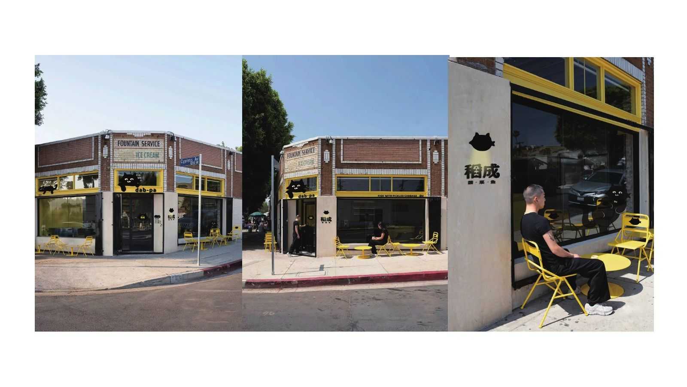
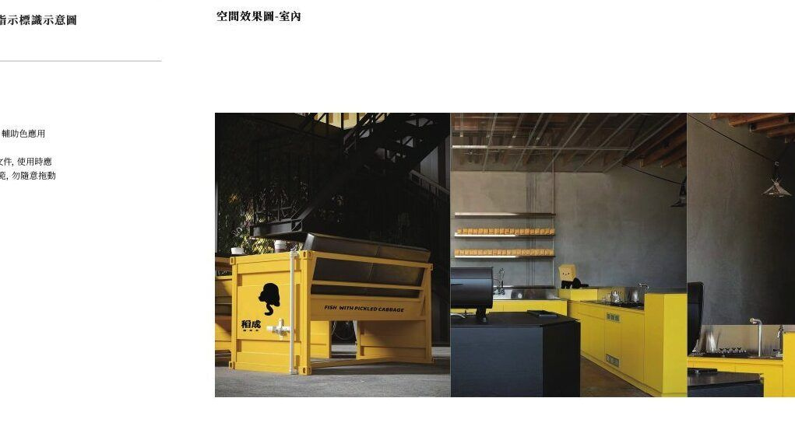